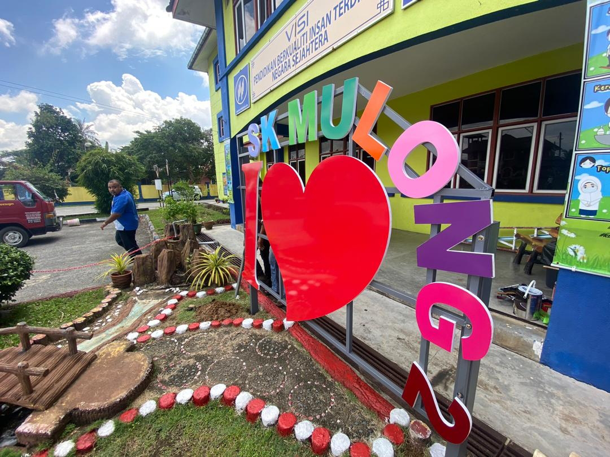
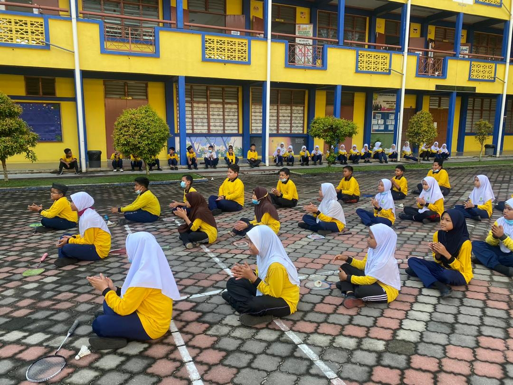
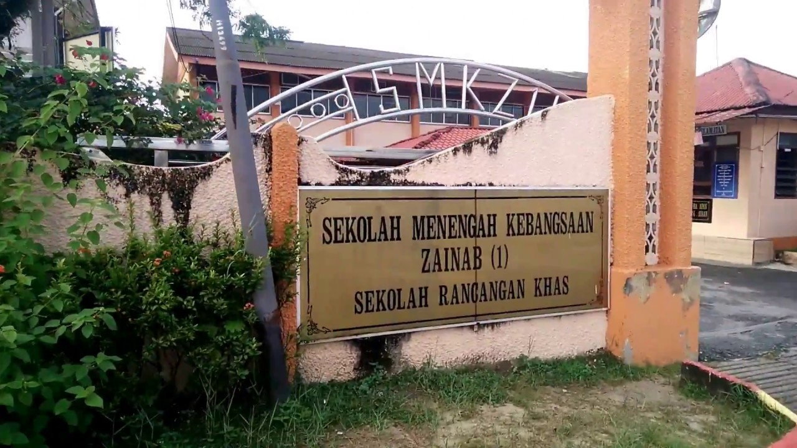
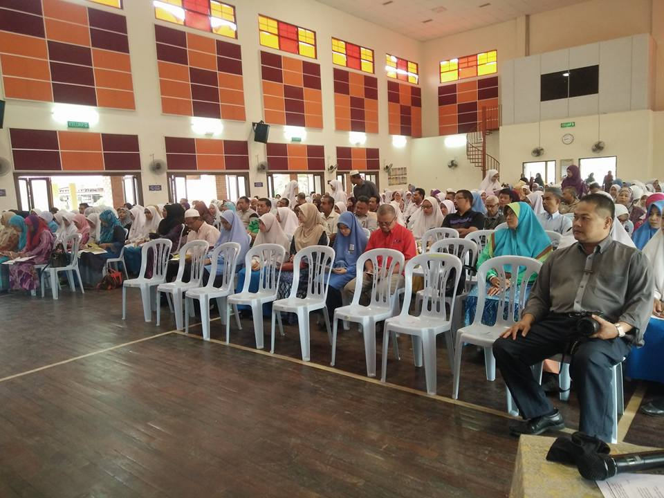
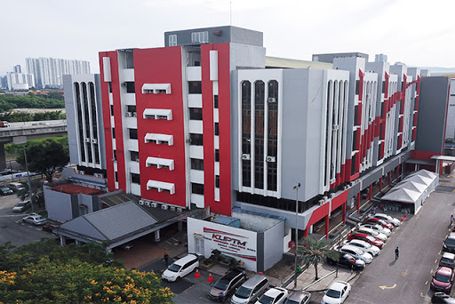
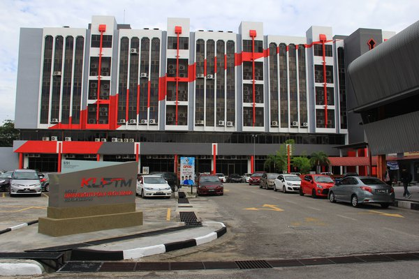
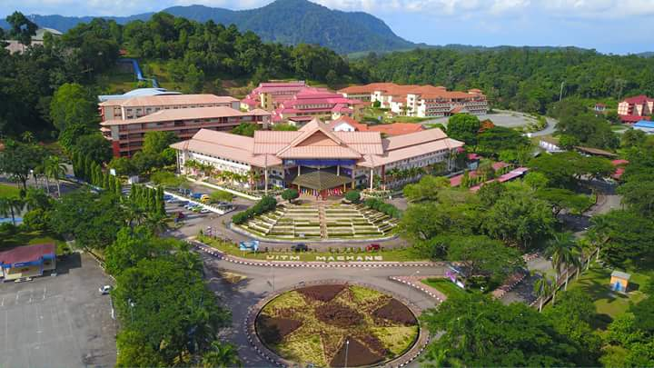
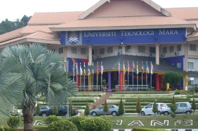

Personal Profile
All About Me
My Education
My Family
Gallery
Contact Me
MY EDUCATION BACKGROUND
So, now let me tell you where I have been for my study.
MY PRIMARY SCHOOL
I went to SEK KEB MULONG 2. I studied there from standard 1 until standard 6. I took my UPSR there.
 
MY SECONDARY SCHOOL
From my UPSR result, I managed to enter SEK MEN KEB ZAINAB 1 in Kota Bharu. I studied there from form 1 until form 5. I took my PMR and SPM there.
 
DIPLOMA
After SPM, I went to KOLEJ UNIVERSITI POLY-TECH MARA KUALA LUMPUR in Cheras, KL. I took my favourite course which is Diploma in Teaching English as a Second Language (TESL). The diploma took me 3 years to finish the study.
 
BACHELOR DEGREE
Finished with diploma, I decided to further my study for degree. Here I am currently studying for Bachelor Degree at UiTM MACHANG, Kelantan. This time, I try to learn something new and choose the course of Office System Management. The degree estimated to finish in 3 years and I hope it done within the actual time frame excellently.
 